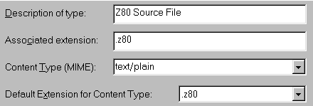
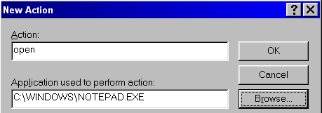

DAY 1. Introduction
novice intermediate advanced expert
Requirements for Learning
To learn assembly programming for the TI-83 Plus, you will require a few things.
| TI-83 Plus Calculator |
DevPac8x linker |
| Graph Link cable with associated software |
TI83PLUS.INC file (included) |
| TASM assembler |
TASM Z80 table file (tasm80.tab) |
It is also highly recommended that you be fairly competent in any programming language. And when I say "any programming language", I mean, of course, C. If z80 is your first venture into programming, I guarantee you, reading this guide will give you a brain aneurysm. Well, maybe that's a bit harsh, but I will use C as a kind of "pseudocode" from time to time, so if you know any kind of high-level language (with the definite exception of TI-BASIC) you should do okay.
Development of a Z80 Program
The first step is to create the source code in a text editor. Use Notepad for this, because it saves its files in ASCII text format. As your programs get more involved, it might be a good idea to switch to a specialized IDE (Crimson Editor is a good one). When you save your source file, give it a name descriptive of its function, and add a .z80 extension.
There is a minor irritant we have to fix first, though: when you save your source file, Notepad will name it source.z80.txt because it's stupid enough to think it knows better than you. This is definitely not what you want. To fix this, follow these steps (Windows 98).
- Open Windows Explorer.
- Click the View menu, and select Folder Options...
- In the File Types tab, click New Type...
- Fill out the fields like this:

- Click New... and fill out the fields like this:

- Click OK and Close.
The next step in development is to transform the source code (called "assembling") into machine language that makes sense to the calculator, using a program called (of all things) an Assembler. The assembler we will be using is called TASM (this is not Borland's Turbo Assembler).
Once the program is assembled, a linker is used to alter the machine language slightly in order
for the calculator to be able to read it. We will be using a linker called DevPac8x.
Finally, you ship the program to the calculator and run it.
Assembling
If you didn't do it while you were viewing the readme file, create a new folder off the C:\ drive and call it Asm. In this folder create three new folders:
| Source |
Put your source files here |
| Tasm |
Put TASM.EXE, TASM80.TAB, TI83PLUS.INC, DEVPAC8X.COM here |
| Exec |
Look here for compiled programs |
In the Tasm folder, make a new text file and type in this:
@echo off
echo ==== Now assembling %1.z80 for the TI-83 Plus ====
tasm -80 -i -b c:\asm\source\%1.z80 c:\asm\exec\%1.bin
if errorlevel 1 goto ERRORS
rem This is necessary because of a DevPac8x bug
cd c:\asm\exec
c:\asm\tasm\devpac8x %1
cd c:\asm\tasm
echo ==== Job finished. Program saved as %1.8xp ====
goto DONE
:ERRORS
echo ==== Errors!!! ====
:DONE
del c:\asm\source\%1.lst > NUL
del c:\asm\exec\%1.bin > NUL
echo ==== Done ====
And save as asm.bat. What you just made is called a batch file and is similar in purpose to TI-BASIC programs.
Sample Z80 Program
Now to make sure that everything has been set up satisfactorialy, we are going to write, assemble, link, and send a little do-nothing program. Enter the following source code and don't bother trying to understand it... yet.
.nolist
#include "ti83plus.inc"
#define ProgStart $9D95
.list
.org ProgStart - 2
.db t2ByteTok, tAsmCmp
b_call(_ClrLCDFull)
ld hl, 0
ld (PenCol), hl
ld hl, msg
b_call(_PutS) ; Display the text
b_call(_NewLine)
ret
msg:
.db "Hello world!", 0
.end
.end
And save as hello.z80 in the source directory
to compile, open up DOS (try Start menu, Run, then whichever of command.com or cmd.exe works) and go to the TASM directory. Type asm hello and press Enter.
After a second or two (or more, depending on your computer's speed), assembly will finish, and
the program is ready to be transmitted to the calculator.
Navigating Within DOS
Since Windows completely replaced DOS as the operating system for PCs, most newer computer users will be at somewhat of a loss when confronted with the DOS command prompt. Here are a few things about DOS that you will find helpful when navigating through your directory structure. I presume that you have enough experience with file managers like Explorer to know what things like "subdirectory" and "parent directory" mean.
- Command Prompt
- At the extreme left of the screen is the command prompt. This is the name of the
current drive, current directory, and all parent directories. The format of internet URLs are directly based on the command prompt (although not specifically the DOS prompt), so you shouldn't have any trouble interpreting it.
- cd directory
- Changes the current directory. The directory changed to must be a subdirectory of the
current one.
- cd ..
- Moves to the parent directory of the current directory.
- cd \
- Moves to the root directory.
- dir /p
- Displays a list of all files in the current directory. Useful for getting your
bearings.
Sending to the Calculator
Start the Graph Link software. Other programs like TI-Connect I am unfamiliar with and cannot give any help. Click on Link, Send To >, then RAM. Navigate to the C:\Asm\Exec folder and send hello.8xp over.
To run the program, paste Asm( from the catalog and HELLO from the PRGM menu...
And you should get this:
GAHHHHHHHHHHHHHHHHHHH! Okay, so maybe I don't have a creative bone in my body :-) but, if
the screen went blank, it means that there's an error in the program that's caused the calculator
to crash. All you can do is turn the calculator back on and be greeted by a "RAM Cleared" message, which means exactly what you think it does. Crashes wipe out the RAM and reset the calculator's defaults (fortunately, archived variables are safe). Go back to the "Sample Z80 Program" section and try again.
One Last Important Thing
Assembly programs for the TI-83 Plus cannot be more than 8811 bytes in size. Well they can, but just keep them below that.
This is part of Learn TI-83 Plus Assembly In 28 Days
Copyright (c) 2002, 2003, 2004 Sean McLaughlin
See the file gfdl.html for copying conditions